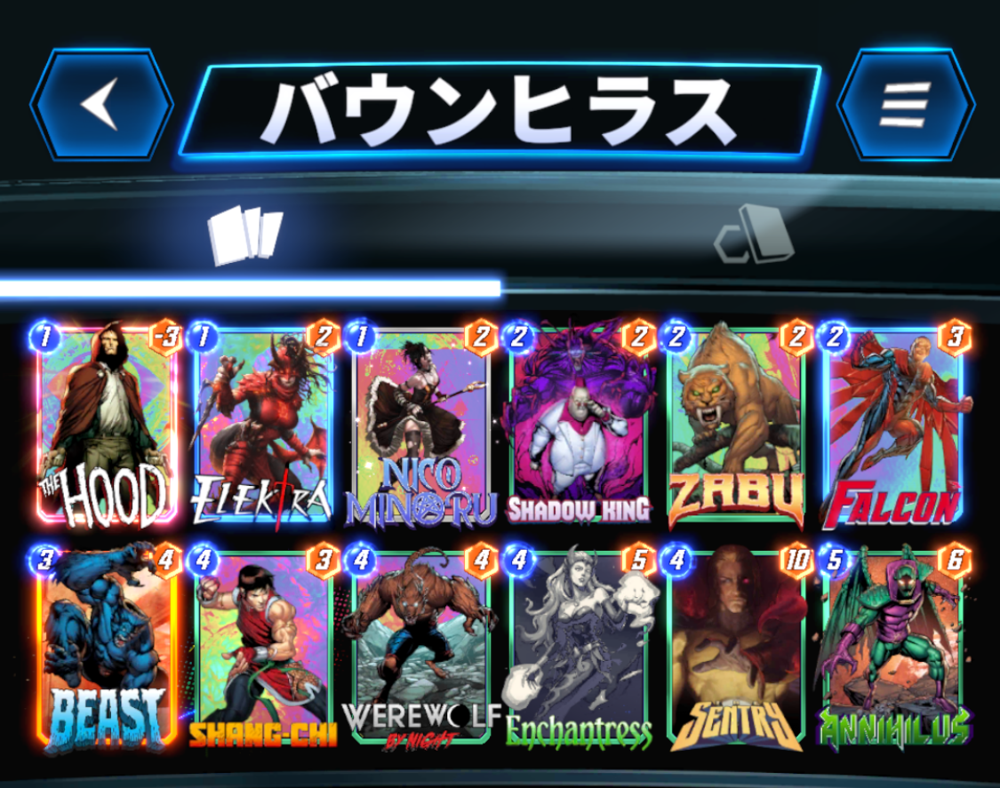

今回は、私７(@NANA1051815)が使用した『アニヒラス型バウンス』デッキの紹介です。
この『アニヒラス型バウンス』ですが、私は勝手に『バウンヒラス』と呼んでいるので、今回もそう呼ばせてもらいます。
デッキ内容はこちら

1コスト：ザ・フッド、エレクトラ、ニコ・ミノル
2コスト：シャドウキング、ザブー、ファルコン
3コスト：ビースト
4コスト：シャンチー、ウェアウルフ・バイ・ナイト、エンチャントレス、セントリー
5コスト：アニヒラス
もともと別の形のバウンヒラスを使っていて、そこから少し入れ換えたデッキになります。
このデッキは、相手の動きを見て柔軟に対応しなければいけないですが、シャンチーやエンチャントレス、シャドウキングなどを採用しているので、どのようなデッキにも合わせられるのが強みです。
詳しく解説していきます。
フッドは、ファルコン、ビースト、アニヒラスのいずれかを引けていれば積極的に出しましょう。
ファルコン、アニヒラスを引けているのであれば、置くロケーションは問いません。
ビーストのみの場合は右ロケに置くのが無難かと思います。（セントリーとの兼ね合い）
エレクトラは、相手の1コストカードに合わせたいので、2ターン目以降に出しましょう。
ニコも回収手段があるなら積極的に出しましょう。「次のカードをプレイした後、そのカードを1つ右のロケーションに移動する。」以外は、割と相性がいいです。
シャドウキングは5ターン目以降が理想的です。
ザブーで3ターン目に繋げるも良し、ファルコンで1コストを回収するも良しで、手札次第で有効な方を選びましょう。（個人的にはザブーを出しがちです。）
このターンから攻め方の方向性を絞っていきます。
攻めパターンとして、
①ウェアウルフを育てる。
②セントリー、デーモンなど高出力カードで攻める。
③アニヒラスでマイナス要因を送りつける。
④シャドウキング、シャンチー、エンチャントレスで相手の攻めを崩す。
これらの攻め方を組み合わせて戦いましょう。
2ターン目にザブーを出せていたら、ウェアウルフかセントリーを出しましょう。
ウェアウルフを置く場合、次のターン以降移動することを考えたロケに置きましょう。
セントリーを置く場合、ヴォイドの処理のために、ビーストかアニヒラスを握っていることが重要です。
ザブーを置けていなくても1、2ターン目のような動きで次に繋げましょう。
このターンにビーストを使うことはほぼありません。
ビーストの役割は、「フッドやヴォイドなどのマイナス要因を回収すること。」、「カードを回収し、下がったコストのアドバンテージを生かすこと。」が挙げられます。
そのため4、5ターン目に使うことが多いです。
デーモン＋ビーストで0コストのデーモンを回収する動きが強いです。
この時に、フッドやヴォイドも同時に回収することが可能です。
2ターン目にザブーを出せていなければ、このターンにウェアウルフやセントリーを出すことになりますが、手札に低コスト公開時カードをたくさん握っているならばウェアウルフ、そうでないならばセントリーを選択していくと思います。
このターンにアニヒラスを置くかは、相手のデッキタイプによります。
相手が破壊、バウンス、ロキ、アニヒラスミラーなどの場合は、フッドやヴォイドを処理されることがあるので、最終ターンに出すことをお勧めします。
廃棄、サーファー、サノス、ハイエボ、ウィニー、トリビュにはこのターンにアニヒラスを置いてもいいです。
アニヒラスを最終ターンに置く場合は、このターンに回収しておいたフッドを出しデーモンを確保しておくことで、次のターンにアニヒラス＋デーモンで出すことが可能です。
フッドに合わせてシャドウキング、シャンチー、エンチャントレスで相手を崩すこともできます。
勝てる場合は先行を取ってもいいと思います。
5ターン目にアニヒラスを置いた場合、手札に残ったカードでできる限りパワーを出していきましょう。
シャドウキング、シャンチー、エンチャントレスなどで相手を崩すのも効果的です。
このターンにアニヒラスを置く場合、ほぼアニヒラスと1コストを置くことになるので、できればデーモンを確保しておきたいです。
アニヒラスを引けていなくても、このターンにビーストでヴォイドを回収することもできます。
基本的な動きはこのようになりますが、相手の動きも手札運もあるので、必ずしもこのような理想的な動きができるとは限りません。
癖のあるカードが多く、局面局面で柔軟に対応しなければいけないので慣れが必要です。
また文字だけでは伝わりきらないと思いますので、プレイ動画を参考にしてみてください。（準備中です）
負け筋としては、
①アーマーやプロフェッサーXで、フッドやヴォイドを固定される場合
②シャンチーで高パワーカードを除去される場合
③キルモンガーで1コストカードを一掃される場合
④リーチで６ターン目の計画が台無しになる場合
などが挙げられます。
それぞれ詳しく見ていきましょう。
フッドやセントリーを採用しているため、マイナス要因の処理が強いられます。
処理方法としてビーストやアニヒラス頼りになり、マイナス要因を抱えたまま複数ターンを跨がなければいけません。
その間に、相手がアーマー＋3枚のカードでロケーションを埋めてきた場合、アニヒラスでは対処することができません。ビーストの確保が必須です。
プロXだとロケーションごと固定されてしまうので、対処が難しくなります。
そのためプロXの影がちらつくデッキには、3ターン目セントリーで4ターン目にビーストで回収のような、早め早めの処理が求められます。
最も注意したいのは、セントリーと育ったウェアウルフを同時にシャンチーされることです。
そのため、同じロケに2枚を留まらせておかないよう注意しましょう。
破壊、サーファーには高確率でキルモンガーが採用されています。
ニコやデーモンといった高パワーになりうる1コストカードを一掃されないように、キルモンガーの使用が確認できるまで、極力1コストカードの展開を避ける。
または、セントリー、ウェアウルフ、アニヒラス等で対処しましょう。
リーチが出てきそうなデッキには、5ターン目にアニヒラスを打っておくことをお勧めします。
また、セントリーを残しておくとノーリスクで置けることもあるので視野に入れておきましょう。
参考までにバウンヒラスのプレイ動画を貼っておきます。
負け試合もしっかり載せてますので参考にしてください。